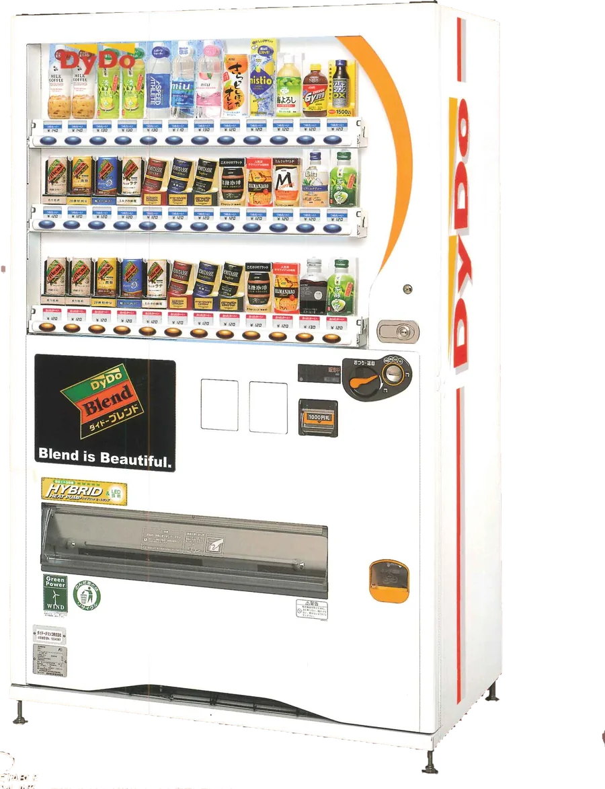
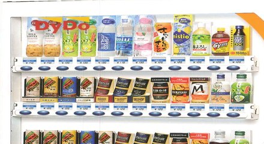
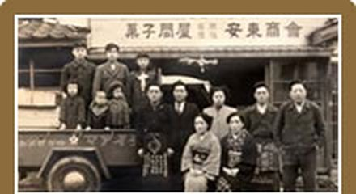
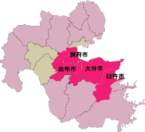

ダイドードリンコ自動販売機設置なら、信頼と実績の安東商会(大分県大分市)にお任せください。
創業 昭和25年
あの寒い日の、
あの一本。
半世紀を超えて、大分の街角でほっとする一本をお届けしています。
香料ゼロ
まっすぐな、
コーヒーの味。
主力コーヒーは香料を一切使用せずに製造。飽きのこない味で、冬場でも安定した売上が見込めます。
自販機でしか買えない
ここでしか、
会えない缶。
DyDoの商品は一部を除き、コンビニや量販店には流通していません。置くだけで、選ばれる理由になります。
- 昭和25年創業。変わらぬ精神で営業を続けています
- 1営業日ご連絡から対応までの目安（商圏内）
- 0円自動販売機の設置費用
安らぎの薫風吹きし 東から 商い神と 会いしめでたさ
私たちの信念は、創業当時から変わらぬ
『良い商品を届け、地域の皆さまに、喜んでいただくこと』
創業半世紀を超える実績と経験。こだわりの商品を厳選し、最高の組み合わせで提供いたします。 私たちがお届けするのは、ご家族の毎日の健康と笑顔です。

新着情報
- 2015.01.01 ホームページをリニューアルしました
事業案内
自動販売機オペレートサービス
多彩な機能を備えた自動販売機をご提案
「店の前に設置したい」「マンションのロビーに置きたい」「福利厚生として事務所に置きたい」など、自動販売機を置きたい場所があれば、お気軽にお問い合せください。経験豊富なスタッフが、最適な自動販売機設置のご提案をし、アフターフォローも万全です。
訪問治療

ご高齢者や身体に障がいのある方のご自宅・施設におうかがいし、はり・きゅう・マッサージ・リハビリ（機能訓練）を行う訪問治療院です。健康保険が適用されるため、1回あたり0〜500円前後のご負担でご利用いただけます。まずは無料体験をお試しください。
お問い合わせ：097-594-1055（9:00〜18:00）
安東商会が選ばれる理由
-
地域密着型の事業展開
連絡を受けてから１営業日以内で対応できる範囲を商圏と定め、お客様に対する素早い対応と、ハイレベルなサービスの提供を実現します。
詳しく見る >> -

取り扱い商品へのこだわり
地域の皆様に間違いなく喜んでいただける商品・サービスに限定して取り扱っています。商品事故などの際も誠実に対応いただけるメーカー様とのみお付き合いをしています。
詳しく見る >> -

受け継がれる伝統
昭和25年の創業以来、その時代に合わせて業態を変えながらも、良い商品を地域の皆様により多く届けて喜んでいただく。この変わらぬ精神で営業を続けています。
詳しく見る >>
自動販売機を設置するメリット
-
毎月の販売手数料収入
自動販売機を設置すると、その売上高に応じて毎月販売手数料を受け取ることができます。
-
DyDoの商品は自販機でしか買えない
一部を除きコンビニや量販店には流通していないため、自動販売機設置のメリットが高くなります。
-
商品へのこだわり
主力コーヒーは香料を一切使用せずに製造。飽きのこない味で、冬場でも安定した売上が見込めます。
-
豊富なラインナップ
ポイント機能や当たり機能、募金型・災害時支援型など、設置場所に合わせた機種をご提案します。
-
福利厚生にも最適
工場や工事現場など、飲料が必要な場面では定価より安い価格設定で販売することも可能です。
対応エリア
「連絡をいただいてから１営業日以内に対応できる」範囲を商圏と定めています。自動販売機オペレートサービスの対応エリアは次の4市です。
- 大分市
- 別府市
- 由布市
- 臼杵市

設置までの流れ
-
お問い合わせ
お電話またはメールでご連絡ください。
-
打ち合わせ
現地を確認し、機種・商品をご提案します。
-
お申し込み
無償貸出の書類にご記入・ご捺印いただきます。
-
サービス開始
設置作業を行い、商品をセットして販売開始です。
-
アフターフォロー
定期訪問で補充・清掃・集金・安全点検を行います。
よくある質問
-
自動販売機を設置する場合、何が必要ですか？ 設置スペースと電源が必要です。基礎工事・付帯工事やコンセントの新設が必要な場合はメーカー負担で工事を行いますので、設置される方にご負担はかかりません。
-
電気代はどのくらいかかりますか？ 自動販売機のサイズにもよりますが、2,000円～4,000円ほどになります。
-
一度設置したら、撤去することはできないの？ できます。基本は1年間の無償貸出契約で自動更新となりますが、店舗の移転や売上見込みのご事情など、その都度ご相談いただければ対応いたします。移動・撤去の費用もかかりません。
WEBカタログ
自動販売機の機種と、DyDoの商品ラインナップをPDFでご覧いただけます。
自動販売機の設置は、お気軽にご相談ください
平日 8:00-17:00／土・祝日 9:00-17:30
関連リンクとご案内
もうひとつの事業
サイト内リンク
PDFのご利用について